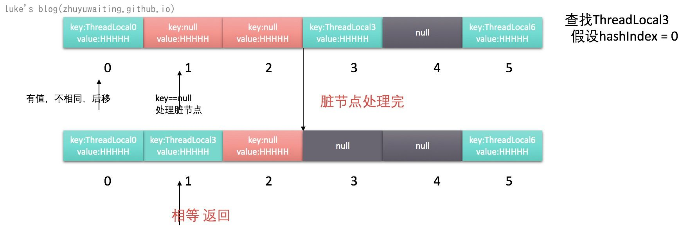

前言：
1 | This class provides thread-local variables. These variables differ from |
ThreadLocal 提供共了线程本地变量的能力，每个线程单独保留变量的副本，进行get，set操作的时候，都是操作的线程本地变量。
ThreadLocal通过为每个线程提供一个独立的变量副本解决了变量并发访问的冲突问题。有着丰富的使用场景，例如数据库链接，session管理等等。
示例
1 | public class ThreadId { |
说明：
创建一个ThreadLocal变量，初始化值为nextId的值，用来表示线程Id，get的时候，返回线程本地变量，该例子返回的是每个线程自己的ThreadId.
源码分析
属性
1 | // 用于ThreadLocalMap 的key的hash |
说明： ThreadLocal类中的ThreadLocalMap是用来存储每个线程本地变量的地方，其是一个典型的Map结构，ThreadLocal的实现，多数是通过ThreadLocalMap来实现的。
WeakReference 弱引用 关于引用的区别可以参考:https://www.cnblogs.com/gudi/p/6403953.html
对象回收：https://www.oracle.com/technical-resources/articles/javase/finalization.html
ThreadLocal引用关系链：

这里有个很重要的点就是 ThreadLocalMap中对于ThreadLocal的应用是一个弱引用，而弱引用一旦外围没有应用关系，也就是关系链中的ThreadLocalRefd断开设置为null,那么ThreadlLocal就会被垃圾回收器回收。
但是当前线程依旧会存在引用链条: CurrentThreadRef -> CurrentThread -> ThreadLocalMap -> entry-> V 的引用链条，如果 CurrentThreadRef不被清空回收，那么会导致的问题就是V这个对象也不会被回收。由于我们线程经常是利用线程池来管理做到线程复用，那么可能V就会一直不被回收，导致出现内存泄露的问题。
而 ThreadLocal类也采用了一些技术去避免这种内存泄露的问题，通过下面的源码会详细分析如何避免这个问题。
setInitialValue 初始化方法
1 | // 默认初始化值为null |
说明： 初始化的时候默认的初始化值为null，会创建一个ThreadLocalMap对象到 线程的Thread对象中存储。
ThreadLocalMap.expungeStaleEntry
针对于key=null的节点,也就是脏数据，做失效处理。key=null的节点，上面说了，是因为ThreadLocal外部引用被清空，导致垃圾回收器回收了ThreadLocal对象
1 | // 下一个索引位置 如果i+1<len 就返回i+1 否则从数组头开始 |
说明:
expungeStaleEntry 是清理失效节点的作用，防止应为ThreadLocal被释放，线程不释放，导致value不释放 出现的内存泄露问题。
expungeStaleEntry 由于ThreadLocalMap是通过开放地址法来解决的hash冲突问题，所以此处进行清理的时候，重新整理了节点的位置。
过程如下：

ThreadLocalMap.getEntry
1 | // 获取一个ThreadLocal的值 |
说明：
- 由于ThreadLocalMap使用开放地址法进行hash冲突解决，所以找到hashIndex之后需要比较key是否相等，如果相等直接返回value，否则利用开放地址法特性向后查找。
- 查找节点的过程，如果有遇到key==null的节点表示有脏数据了，需要进行清理。

get方法
1 | // 从线程t中获取 ThreadLocalMap |
说明：get方法主要首先获取当前线程的ThreadLocalMap然后利用getEntry去获取值。
cleanSomeSlots
1 | private boolean cleanSomeSlots(int i, int n) { |
说明： 从i开始查看一半的节点，如果有需要清理的，进行清理，再重试。没有清理的的直接退出
set()
1 |
|
一个情况的大致流程如下所示：
remove
1 | // 删除 |
说明: 通过循环，找到节点，找到了就清楚。
总结：
- ThreadLocal是通过线程本地变量的方式解决并发访问的问题。
- 每个线程Thread对象中，都有一个ThreadLocalMap的对象，ThreadLocalMap中以key=ThreadLocal value为值的结构存储了ThreadLocal的本地副本，get，set的访问都是访问这个本地的副本
- 由于ThreadLocalMap对于key ThreadLocal是弱引用 WeakReference,意味着外部定义的ThreadLocal=null 这样被释放后，或者外部的ThreadLocal变量被回收后，由于是WeakReference的对象，ThreadLocal的这个对象会被GC回收，由于我们的线程通常是通过线程池使用达到线程复用，所以可能线程没被回收，导致这个ThreadLocal的本地副本value对象不会被回收。ThreadLocal通过expungeStaleEntry方法重整清理失效节点。
- 由于ThreadLocalMap是通过开放地址法解决的hash冲突。所以在进行清除节点的时候，需要重新整理节点的位置，查找节点的时候如果hashIndex处不是并且不为null，则需要向后查找。